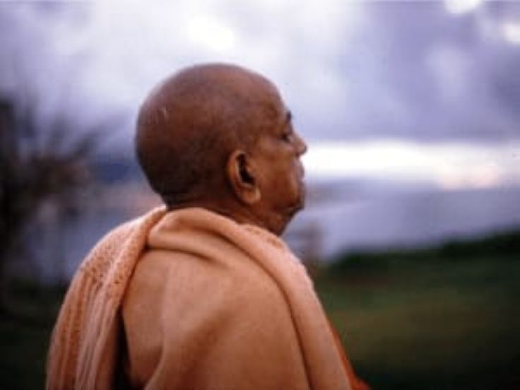

Yes!
Posted on : 3rd March, 2025

Baradraj : One time in Vrindavan he was recovering from a long illness, apparently. When he began to take his morning walks again the devotees were overjoyed. They turned out in great numbers to walk with him. Prabhupada was feeling very inspired. He would talk and was very animated, arguing strongly. He enjoyed the morning walk, but when he came back he was practically exhausted. He would lie down for the rest of the day. One morning he was thinking out loud. He said, "How is this? Now I am feeling strong, talking and walking, but then when I get back, I have no strength. Almost cannot move. What is that?" Brahmananda said, "It's transcendental, Srila Prabhupada." Prabhupada looked at him for a moment and said, "Yes."
~ Memories anecdotes of a modern day saint Vol-1 by siddhanta das.